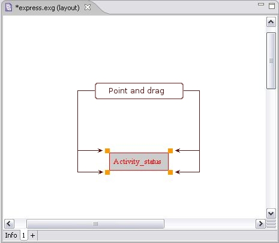

Box Size
Change size
Auto size
Change size
You can change a size of an applicable object box in the
Editor
panel:
Click on the object box you want to resize. The box frame with squares in the corners are highlighted (see
Figure 1
).
Point on the highlighted square and drag until the box reaches an applicable shape.

Figure 1.
Resize object.
To top
Autosize
If the manually defined size of the particular object square does not satisfy, you can adjust the automatically defined size:
Select an applicable object. The object is highlighted on the diagram (see
Figure 1
).
Right click on the selected object. The context sensitive menu appears.
Select the
Auto size
menu item. The automatically defined size is set for the selected object.
To top
Copyright © 2005-2008
LKSoftWare GmbH
. All Rights Reserved.
JSDAI is a registered trade mark of LKSoftWare GmbH.